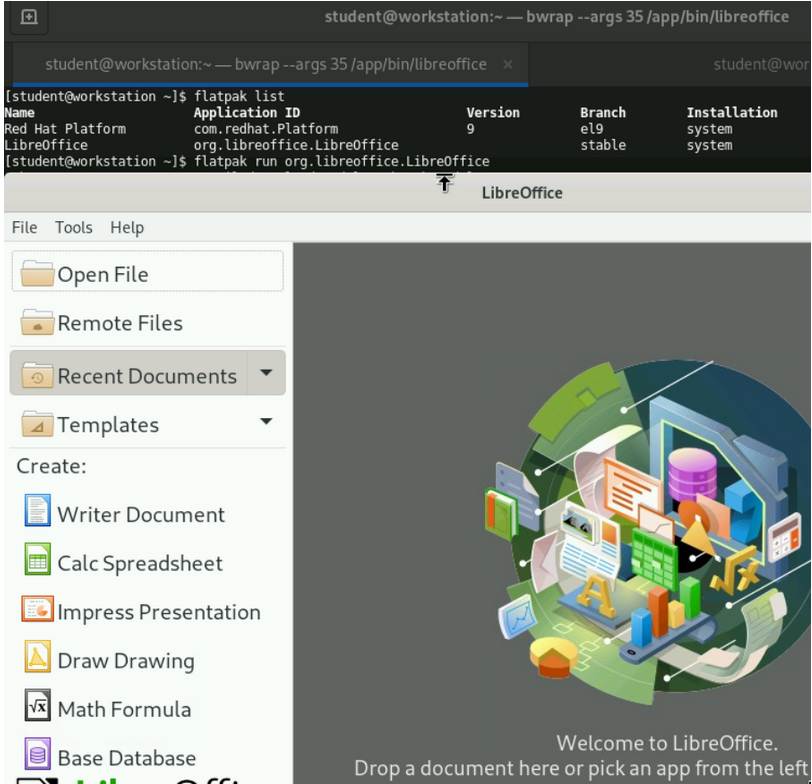
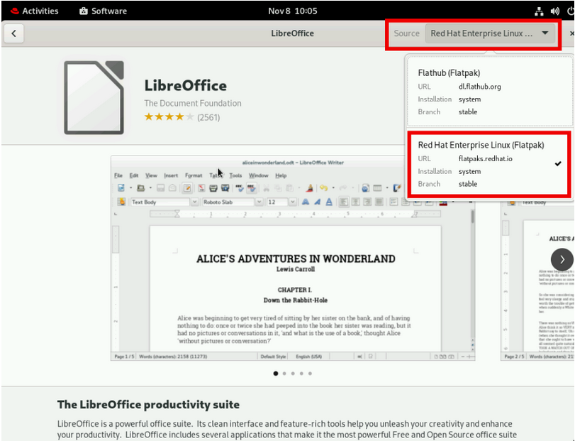

Guided Exercise: Install an application using Flatpak
Use the Flatpak technology to install an application.
Launch the application and view it in the desktop environment.
Outcomes
-
Install and launch an application using Flatpak.
Instructions
-
From the Lab environment tab of your ROLE environment, click Open Console button beside the workstation machine to open the console.
-
Click
Studentand enterstudentas the password when prompted. -
Click Authenticate.
-
-
Open a terminal and verify that you already have Flatpak installed.
$ rpmquery flatpak flatpak-1.12.5-2.el9_0.x86_64
Note: You must be on the console of the workstation and then open a terminal. Flatpak needs the graphical target to function.
-
Add the Red Hat supported
Flatpak remote`. Enter the passwordstudentwhen prompted for the sudo password.$ sudo flatpak remote-add --if-not-exists rhel https://flatpaks.redhat.io/rhel.flatpakrepo
-
Log in to the Red Hat container catalog using your own credentials.
$ podman login registry.redhat.io Username: your-user-name Password: your-password
-
If you do not have an existing credential to log in to registry.redhat.io then you can generate them by visiting https://access.redhat.com/terms-based-registry/ and creating a new service account.
-
-
Search for the LibreOffice application and copy the application ID.
$ flatpak search LibreOffice Application ID Version Branch Remotes Description org.libreoffice.LibreOffice stable rhel The LibreOffice productivity suite
-
Install a Flatpak application use the
flatpak install command. You specify the remote name and the application ID in the command.$ flatpak install rhel org.libreoffice.LibreOffice Required runtime for org.libreoffice.LibreOffice/x86_64/stable (runtime/com.redhat.Platform/x86_64/el9) found in remote rhel Do you want to install it? [Y/n]: Y
org.libreoffice.LibreOffice permissions: ipc network pulseaudio wayland x11 dri file access [1] dbus access [2] bus ownership [3][1] host [2] org.gtk.vfs.* [3] org.libreoffice.LibreOfficeIpc0
ID Branch Op Remote Download 1. [\] com.redhat.Platform el9 i rhel 500.0 MB / 500.0 MB 2. [ ] org.libreoffice.LibreOffice stable i rhel < 763.9 MB
Installing 1/2… ████████████████████ 100% 50.0 MB/s 00:00 Installation complete.
-
List the installed Flatpak applications.
$ flatpak list Name Application ID Version Branch Installation Red Hat Platform com.redhat.Platform 9 el9 system LibreOffice org.libreoffice.LibreOffice stable system
-
Run the application by replacing the value of application ID listed from the preceding output.
$ flatpak run org.libreoffice.LibreOffice
-
The application launches as shown in the following screenshot.

-
-
Run the grading script to verify your work.
[student@workstation ~]$ lab grade flatpak-install
Grading lab.
SUCCESS Checking lab systems SUCCESS Checking if Flatpak is installed SUCCESS Checking if Libreoffice is installed using Flatpak
Overall lab grade: PASS
-
Optionally, open the Gnome Software Center by clicking on Activities on left top and then click the Software icon at the bottom panel. Verify that you can see
Libreoffice`from the Flatpak source by clicking the Source dropdown on right top as shown in the following screenshot.